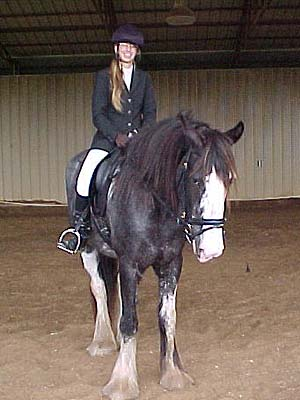
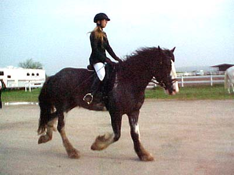
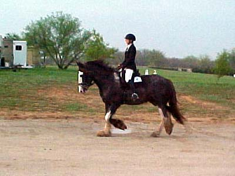
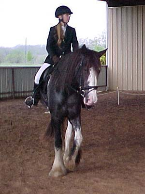
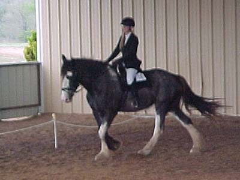

Emma's First Dressage
Test
(She was great in the new
place and wasn't silly about anything.
No spooking or shying, just
a lot of looking. We only did Intro 1,
but I couldn't have been
happier. The judge loved her and we won
with a 71%. I don't always
agree that natural movement should
place higher, but it's kinda
cool to score so high on a horse
that still needs to learn
a bit about steering...)
VIDEO
CLIP FROM THE SHOW

Just a schooling show, so we're both
a bit shaggy.

Warming up outside. Her trot is awsome.
With all the thundering, people would stop and stare...

Only two weeks of working on it, and
she already seeks the bit and stays near the vertical.

She's almost 4, but still has a lot
of filling out to do. Someday we'll pass the awkward stage.

She got an 8 on her walk. The judge
said that if I'd let her stretch down, our score would have been higher
(haven't got stretching down at the walk yet, only at the halt).